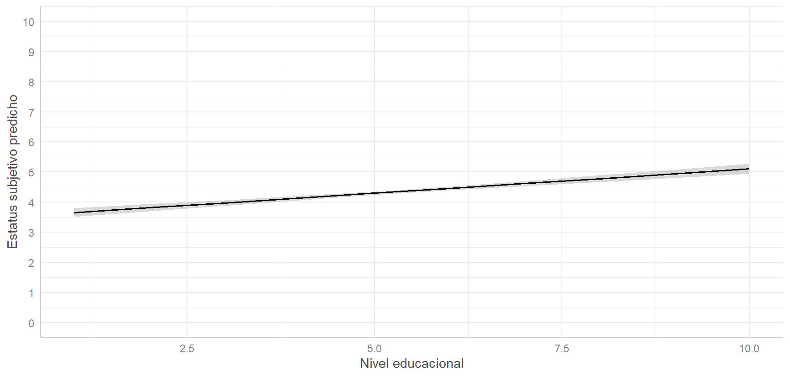
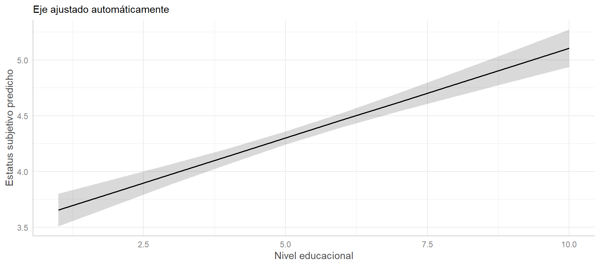

| Variable | Unidad | DE |
|---|---|---|
| Estatus subjetivo | peldaño (0-10) | 1.53 |
| Nivel educacional | nivel (1-10) | 2.18 |
| Ingreso (cientos de miles) | cien mil pesos | 5.58 |
| Edad | año | 15.14 |

Métodos estadísticos para
Ciencias Sociales III
Kevin Carrasco
Sociología - UNAB
2do Sem 2026
https://metod3-unab.netlify.app/
Sesión 6
Recordatorio de la unidad anterior
Estandarización de coeficientes
Estimación de valores predichos
Retomando
Antes de la prueba dejamos cerrada la primera parte del curso: estimación, ajuste, inferencia, regresión múltiple y reporte
Hoy retomamos con un contenido que quedó pendiente, la estandarización de coeficientes
Y avanzamos al tercer objetivo del modelo de regresión: la predicción
Recordatorio: lo que llevamos
Los tres objetivos del modelo de regresion
Conocer: la variación de la variable dependiente según la variación de una o más independientes
Inferir: establecer en qué medida esa asociación es estadísticamente significativa
Predecir: estimar el valor de la variable dependiente según el valor de las independientes
Los dos primeros ya los trabajamos. El tercero es el contenido de hoy
El modelo, en una línea
\[\widehat{Y}=b_{0} + b_{1}X_{1} + b_{2}X_{2} + \dots + b_{k}X_{k}\]
\(b_0\): valor esperado de \(Y\) cuando todas las independientes valen 0
\(b_j\): cambio esperado en \(Y\) por cada unidad de \(X_j\), manteniendo constantes las demás
\(e_i = Y_i - \widehat{Y}_i\): residuo, lo que el modelo no logra explicar
Estimación
\[b_{1}=\frac{\sum(x_i - \bar{x})(y_i - \bar{y})} {\sum(x_i - \bar{x})^2} \qquad b_{0}=\bar{Y}-b_{1}\bar{X}\]
El criterio es el de mínimos cuadrados ordinarios: la recta que minimiza la suma de los residuos al cuadrado
La recta siempre pasa por el punto de los promedios \((\bar{X}, \bar{Y})\)
Parcialización y control estadístico
En regresión múltiple, cada coeficiente está parcializado respecto de los demás predictores
Por eso los coeficientes cambian al agregar variables: pueden disminuir, aumentar o incluso invertir su signo
Siempre debe explicitarse qué variables están en el modelo al interpretar un coeficiente
Ajuste e inferencia
\(R^2 = SS_{reg}/SS_{tot}\): proporción de la varianza de \(Y\) asociada al modelo. El \(R^2\) ajustado penaliza el número de predictores
El error estándar mide la imprecisión del coeficiente
\(t = \beta / se(\beta)\). Para muestras grandes, \(t > 1{,}96\) permite rechazar \(H_0\) a un \(p<0{,}05\)
Significación estadística no equivale a relevancia sustantiva
Nuestro modelo de referencia
Seguimos con el estatus social subjetivo en ELSOC 2016 (N = 2301)
| Estatus subjetivo | ||
|---|---|---|
| Predictores | β | std. Error |
| (Intercepto) | 2.9215 *** | 0.1465 |
| Nivel educacional | 0.1611 *** | 0.0165 |
| Ingreso (cientos de miles) | 0.0483 *** | 0.0061 |
| Edad | 0.0063 ** | 0.0021 |
| Observations | 2301 | |
| R2 / R2 adjusted | 0.113 / 0.111 | |
| * p<0.05 ** p<0.01 *** p<0.001 | ||
Estandarización de coeficientes
El problema
Mirando la tabla anterior, ¿cuál de los tres predictores es más importante?
Nivel educacional: 0.1611
Ingreso (cientos de miles): 0.0483
Edad: 0.0063
¿Significa esto que la educación importa 25 veces más que la edad?
Los coeficientes están en escalas distintas y no son directamente comparables
Escalas distintas
Un año más de edad es un cambio muy pequeño en su escala; un nivel educacional más es un cambio grande en la suya
Comparar 0.1611 con 0.0063 es comparar cantidades medidas en unidades diferentes
La solución: una escala común
Para comparar la magnitud de un coeficiente respecto de los otros se requiere pasar a una escala común
Esto se efectúa mediante la estandarización
Cada valor se pondera respecto de la desviación estándar de su propia variable
El puntaje Z
A cada valor se le resta el promedio y se divide por la desviación estándar:
\[z_x=\frac{x-\bar{x}}{sd(x)}\]
El resultado tiene media 0 y desviación estándar 1
El procedimiento se aplica tanto a la dependiente como a las independientes
Un valor de \(z = 1\) significa “una desviación estándar por sobre el promedio”
Estandarización en R
Comparación de modelos
| No estandarizado | Estandarizado | |||
|---|---|---|---|---|
| Predictores | β | std. Error | β | std. Error |
| (Intercepto) | 2.922 *** | 0.146 | 0.000 | 0.020 |
| Nivel educacional | 0.161 *** | 0.016 | 0.230 *** | 0.024 |
| Ingreso | 0.048 *** | 0.006 | 0.176 *** | 0.022 |
| Edad | 0.006 ** | 0.002 | 0.062 ** | 0.021 |
| Observations | 2301 | 2301 | ||
| R2 / R2 adjusted | 0.113 / 0.111 | 0.113 / 0.111 | ||
| * p<0.05 ** p<0.01 *** p<0.001 | ||||
Interpretación
Los coeficientes reflejan cuántas desviaciones estándar cambia \(Y\) ante el cambio de una desviación estándar en \(X\)
Nivel educacional (0.23): por cada desviación estándar adicional de educación, el estatus subjetivo aumenta 0.23 desviaciones estándar
Ahora sí son comparables: educación (0.23) e ingreso (0.176) tienen pesos similares, y ambos claramente mayores que edad (0.062)
Lo que revela la estandarización
En la escala original, el coeficiente del ingreso (0.0483) parecía casi despreciable frente al de educación (0.1611)
Estandarizados, 0.176 frente a 0.23: el ingreso pesa casi tanto como la educación
De un coeficiente al otro
No es necesario reestimar el modelo. El coeficiente estandarizado se obtiene como:
\[\beta_{std} = b \times \frac{sd(X)}{sd(Y)}\]
Para el ingreso:
\[0.0483 \times \frac{5.58}{1.53} = 0.176\]
¿Qué NO cambia al estandarizar?
El \(R^2\) es idéntico: estandarizar no altera el poder explicativo, solo la escala de los coeficientes
Los valores \(t\) y los niveles de significación tampoco cambian
El intercepto pasa a ser 0, y deja de tener interpretación sustantiva
Ventajas y desventajas
Ventajas
- Permite comparar predictores entre sí
- Neutraliza escalas distintas
- Facilita la interpretación en términos relativos
Desventajas
- Se pierde la interpretación sustantiva
- El intercepto deja de ser informativo
- En variables dicotómicas resulta poco intuitivo
- Dependen de la variabilidad de esta muestra
En la práctica
Se reportan los coeficientes no estandarizados como resultado principal
Y los estandarizados cuando la pregunta es explícitamente sobre importancia relativa
Volviendo al segundo ejemplo
En la sesión anterior estimamos un modelo sobre la escala de bienestar anímico (rango 0-36), con educación, ingreso y edad como predictores
La educación (-0.294) parecía tener un efecto más de tres veces mayor que el ingreso (-0.086)
La edad no resultó significativa (p = 0.252)
Quedó pendiente la pregunta: ¿realmente la educación pesa tres veces más?
Estandarizando ese modelo
| No estandarizado | Estandarizado | |||
|---|---|---|---|---|
| Predictores | β | std. Error | β | std. Error |
| (Intercepto) | 8.581 *** | 0.582 | -0.000 | 0.021 |
| Nivel educacional | -0.294 *** | 0.066 | -0.111 *** | 0.025 |
| Ingreso | -0.086 *** | 0.024 | -0.083 *** | 0.023 |
| Edad | -0.010 | 0.008 | -0.025 | 0.022 |
| Observations | 2285 | 2285 | ||
| R2 / R2 adjusted | 0.026 / 0.024 | 0.026 / 0.024 | ||
| * p<0.05 ** p<0.01 *** p<0.001 | ||||
La conclusión cambia
Estandarizados: educación -0.111, ingreso -0.083
La distancia entre ambos se reduce considerablemente
La impresión de que la educación importaba mucho más que el ingreso era, en buena medida, un efecto de las unidades de medida
Igual que en el ejemplo del estatus subjetivo: los coeficientes en escala original no sirven para comparar importancia relativa
Cómo se reporta
Se estimó un modelo de regresión lineal sobre una escala sumativa de estados anímicos (rango 0-36), con datos de la primera ola de ELSOC (2016; N = 2285). Tanto el nivel educacional (β = -0.294) como el ingreso del hogar (β = -0.086) presentan asociaciones negativas y estadísticamente significativas, consistentes con la hipótesis del gradiente social. La edad no alcanza significación estadística (p = 0.252) una vez controladas las restantes variables. Los coeficientes estandarizados (-0.111 y -0.083, respectivamente) indican pesos relativos similares para ambos predictores, pese a que sus coeficientes en escala original difieren en un factor cercano a tres. El modelo explica un 2.6% de la varianza.
Lo que enseñan los dos ejemplos
La comparación de magnitudes en escala original puede ser francamente engañosa
La estandarización responde a una pregunta específica, la de la importancia relativa, y no a la de significación ni a la de ajuste
Un predictor puede resultar no significativo, y eso también es un resultado que se reporta e interpreta
Estimación de valores predichos
El tercer objetivo
Hasta ahora usamos el modelo para describir una asociación y para inferir si se generaliza
Pero la ecuación también responde otra pregunta: dado un perfil determinado de características, ¿qué valor esperaríamos en la variable dependiente?
Eso es un valor predicho
La ecuación como herramienta
\[\widehat{Y}=b_{0} + b_{1}X_{1} + b_{2}X_{2} + b_{3}X_{3}\]
En nuestro modelo:
\[\widehat{estatus} = 2.9215 + 0.1611(educ) + 0.0483(ing100) + 0.0063(edad)\]
Para obtener un valor predicho basta reemplazar los valores de las variables independientes
Un caso concreto
¿Qué estatus subjetivo esperaríamos de una persona de 30 años, con nivel educacional 8 y un ingreso del hogar de un millón de pesos?
\[\widehat{estatus} = 2.9215 + 0.1611(8) + 0.0483(10) + 0.0063(30)\]
\[\widehat{estatus} = 4.88\]
Esa persona se ubicaría, en promedio, en el peldaño 4.88 de la escalera social
En R: la función predict()
newdatadebe contener todas las variables independientes del modeloLos nombres deben coincidir exactamente con los del modelo
El resultado es el mismo número que obtuvimos a mano
Comparando perfiles
| Educación | Ingreso | Edad | Estatus predicho |
|---|---|---|---|
| 3 | 2.5 | 30 | 3.71 |
| 8 | 10.0 | 30 | 4.88 |
| 3 | 2.5 | 60 | 3.90 |
| 8 | 10.0 | 60 | 5.07 |
Leyendo la tabla de perfiles
Comparando las filas 1 y 2 (misma edad): la diferencia proviene de educación e ingreso
Comparando las filas 1 y 3 (mismas características socioeconómicas): la diferencia proviene solo de la edad
Toda la distancia entre el perfil más bajo y el más alto es de poco más de un peldaño, en una escala de 0 a 10
Valores predichos para todos los casos
Hasta aquí predijimos perfiles hipotéticos. También podemos obtener el valor predicho de cada caso de la base:
| Educación | Ingreso | Edad | Observado | Predicho | Residuo |
|---|---|---|---|---|---|
| 2 | 3.0 | 64 | 5 | 3.79 | 1.21 |
| 4 | 5.0 | 60 | 5 | 4.18 | 0.82 |
| 5 | 5.0 | 54 | 6 | 4.31 | 1.69 |
| 5 | 3.5 | 38 | 4 | 4.13 | -0.13 |
| 5 | 7.0 | 34 | 6 | 4.28 | 1.72 |
Predicho y residuo
El residuo es la distancia entre lo observado y lo predicho: \(e_i = Y_i - \widehat{Y}_i\)
Un residuo positivo indica que la persona se ubica más arriba de lo que el modelo predice para alguien con sus características
Los residuos son, en sí mismos, un objeto de interés sociológico: identifican a quienes se apartan del patrón general
Graficar valores predichos
¿Por qué graficar?
Una tabla de regresión comunica bien a una audiencia especializada
Un gráfico de valores predichos traduce el coeficiente a la escala sustantiva de la variable dependiente
Permite responder de un vistazo: ¿cuánto cambia realmente \(Y\) a lo largo del rango de \(X\)?
La lógica
Fijamos todas las variables menos una en un valor de referencia, habitualmente su promedio
Hacemos variar el predictor de interés a lo largo de su rango observado
Calculamos el valor predicho para cada uno de esos valores
Es, exactamente, la tabla de perfiles pero con muchas filas
Con la librería ggeffects
| Educación | Predicho | IC inferior | IC superior |
|---|---|---|---|
| 1 | 3.655 | 3.509 | 3.802 |
| 2 | 3.816 | 3.699 | 3.934 |
| 3 | 3.977 | 3.886 | 4.069 |
| 4 | 4.139 | 4.069 | 4.208 |
| 5 | 4.300 | 4.241 | 4.359 |
| 6 | 4.461 | 4.396 | 4.525 |
La función fija automáticamente las demás variables en su promedio
El gráfico

Figure 1
Cómo leerlo
La línea recorre los valores predichos a lo largo del nivel educacional, con ingreso y edad fijados en su promedio
La banda es el intervalo de confianza de la predicción
Note el eje vertical: recorre la escala completa de 0 a 10, y la pendiente se aprecia modesta
Una advertencia sobre los ejes
Si dejamos que el eje se ajuste automáticamente al rango de los valores predichos, la misma línea ocupa todo el alto del gráfico
La pendiente parece pronunciada y el efecto, mucho mayor de lo que es
El mismo gráfico, otro eje

Figure 2
Los datos son idénticos a los de la diapositiva anterior. Al graficar valores predichos, use siempre la escala completa de la variable dependiente
Dos tipos de intervalo
Intervalo de confianza: rango plausible para el estatus promedio de las personas con ese perfil
Intervalo de predicción: rango plausible para el estatus de una persona concreta con ese perfil
El segundo es siempre mucho más amplio, porque incorpora la variabilidad individual además de la incertidumbre de la estimación
La diferencia, en números
Para el perfil de 30 años, educación 8 e ingreso de un millón:
El promedio está bien estimado; el caso individual, en cambio, puede ubicarse casi en cualquier lugar de la escala
Un límite: la extrapolación
La ecuación permite reemplazar cualquier valor de \(X\), incluso uno que no existe en los datos
Nada impide calcular el estatus predicho para una persona de 150 años o con un ingreso de cien millones
Pero el modelo fue estimado dentro de un rango determinado, y no hay evidencia de que la relación se mantenga fuera de él
Los valores predichos solo son defendibles dentro del rango observado de las variables
Un ejemplo publicado
Una tabla real
Variable dependiente: participación en protestas
| Variable | Std(B) | IC 95% |
|---|---|---|
| Ingreso mensual del hogar | .175*** | [.117, .232] |
| Satisfacción con situación económica del país | −.131** | [−.191, −.071] |
| Identificación política de izquierda | .150*** | [.091, .209] |
| Identificación con causas sociales | .233*** | [.172, .294] |
| Participación en organizaciones | .270*** | [.214, .326] |
| Edad | .076* | [.017, .135] |
| Nivel educacional | .073* | [.008, .138] |
| R² | .269 | |
| N | 930 |
* p<.05, ** p<.01, *** p<.001
Qué observar en esta tabla
Los coeficientes son estandarizados, de modo que pueden compararse entre sí: el predictor de mayor peso es la participación en organizaciones
No se reportan errores estándar sino intervalos de confianza: ninguno contiene el cero, lo que es coherente con los asteriscos
El signo negativo de la satisfacción económica indica que, a mayor satisfacción con la situación del país, menor participación en protestas
La identificación política es una variable dicotómica; su interpretación la veremos en dos sesiones más
Para revisar
Un ejemplo completo de reporte de resultados en un artículo publicado:
Revista de Sociología, Universidad de Chile
Revisar la sección de resultados, desde la página 43
Hasta ahora deberíamos saber
Los coeficientes en escala original no son comparables entre sí; la estandarización los lleva a una escala común
Estandarizar no cambia el ajuste ni la significación, solo la escala de interpretación
La ecuación de regresión permite predecir el valor esperado de \(Y\) para cualquier perfil de características
Los gráficos de valores predichos traducen los coeficientes a la escala sustantiva, siempre que los ejes no exageren el efecto
Para la próxima sesión
Wooldridge, Introducción a la econometría: secciones 3.2 y 3.3
La próxima clase profundizaremos en la estimación y presentación de valores predichos
Métodos estadísticos para Ciencias Sociales III
Kevin Carrasco
Sociología - UNAB
2do Sem 2026
https://metod3-unab.netlify.app/